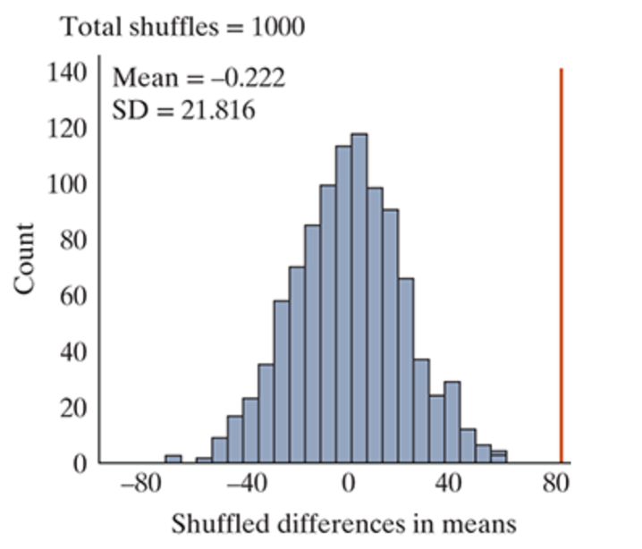
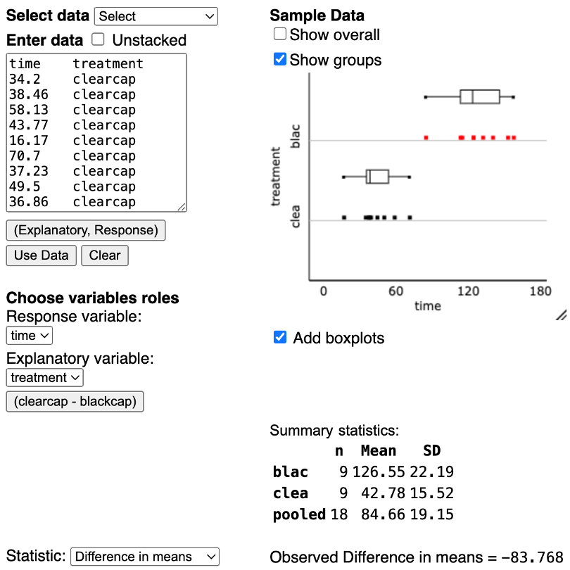
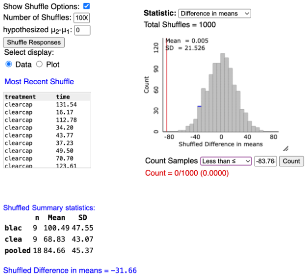

Section 6.2
Comparing Two Means: Simulation Based Approach
Section 6.2 Learning Objectives
Give the null and alternative hypothesis that compares two categories for a categorical explanatory variable and the means of a numerical response variable.
Find and interpret the standardized statistic and the p-value for a test of two means.
Use the 2SD method to find a 95% confidence interval for the difference in population means for two “treatment” groups, and interpret the interval in the context of the study, specifically when it contains zero.
State a complete conclusion in the context of a scenario about the null and alternative hypotheses based on the p-value/standardized statistic.
3S Strategy: Statistic
With numerical variables, now we’re focused on averages.
Parameter: The difference in long run averages between two groups
- \mu_{Group\:1} - \mu_{Group\:2}
Observed Statistic: The difference in conditional averages
- \bar{x}_{Group\:1} - \bar{x}_{Group\:2}
3S Strategy: Simulate & Strength of Evidence
Next, we simulate to gather strength of evidence in favor of H_A
Null Hypothesis: There is no difference between the long run averages of two groups
Alt. Hypothesis: There is a difference between the long run averages of two groups
3S Strategy: Simulate & Strength of Evidence
In symbols:
H_0: \mu_{Group\:1} - \mu_{Group\:2} = 0
H_A: \mu_{Group\:1} - \mu_{Group\:2} >,<,\neq 0
3S Strategy: Simulate & Strength of Evidence
Recall, we can alternatively write our hypotheses as:
H_0: \mu_{Group\:1} = \mu_{Group\:2}
H_A: \mu_{Group\:1} >,<,\neq \mu_{Group\:2}
Recall: Symbol Comparison for ONE Proportion/Mean
| Categorical Variable | Numerical Variable | |
| Parameter of Interest | \pi | \mu |
| Observed Statistic | \hat{p} | \bar{x} |
Symbol Comparison for TWO Proportions/Means
| Categorical Response Variable | Numerical Response Variable | |
| Parameter of Interest | \pi_1-\pi_2 | \mu_1-\mu_2 |
| Observed Statistic | \hat{p}_1-\hat{p}_2 | \bar{x}_1-\bar{x} _2 |
Notice the pattern here!
Dung Beetle Example
Dung Beetles
Researchers want to investigate if a certain type of dung beetle can navigate using the stars
18 total beetles
Process:
- Place all 18 beetles on a platform on a moonless night
- 9 receive a black cap to obstruct their sight; the other 9 receive a clear cap as a placebo
- The time taken for each beetle to reach the edge of the platform is recorded
Dung Beetles
Explanatory variable: Black cap or clear cap
- Categorical or numerical? Categorical
Response variable: Time taken to reach the edge
- Categorical or numerical? Numerical
Dung Beetles
\mu = long run average time it takes to reach the edge of the platform
\mu_b = Long run average time for beetles with the black cap
\mu_c = Long run average time for beetles with the clear cap
Dung Beetles
If dung beetles can navigate using the stars, we would expect \mu_b to be larger (longer time).
Parameter: \mu_b - \mu_c
“The difference in long run average time to get to the edge of the platform between the beetles with the black cap and beetles with the clear cap.”
Dung Beetles
Hypotheses:
Null: There is no difference in average time taken to get to the edge between the two groups
Alt: The average time for the group with the black cap is longer
In symbols:
H_0: \mu_b - \mu_c = 0
H_A: \mu_b - \mu_c > 0
Strength of Evidence
P-values
P-value: how likely we are to observe a difference in sample means as or more extreme than the one we saw in the data, based on the null distribution.
P-value < significance level, reject the null
- Strong evidence that the two groups are different
P-value ≥ significance level, fail to reject the null
- No evidence that the groups are different from each other
Null Distribution

Null Distribution
The null distribution is simulated assuming: H_0: \mu_b - \mu_c = 0
- As with proportions, the middle of the null distribution is zero
Multiple Means Applet

Observed Statistic
Similar to proportions, the observed statistic is just the observed difference in means between the two groups.
- \bar{x}_b - \bar{x}_c=126.55-42.78=83.768
Finding the P-value

Finding the P-value
We find the p-value the same way as before.
Given our observed statistic, how many simulated values are as or more extreme?
On the previous slide, p-value = 0/1000
- This is less than 0.05, reject H_0
Standardized Statistic (SS)
General form:
t=\frac{Observed\: Statistic - Hypothesized\: Value}{Standard\: Deviation\: under\: the\: null}
=\frac{(\bar{x}_1-\bar{x}_2)-0}{SD\: from\: Applet}
Standardized Statistic (SS)
Same conclusions as before
Outside the 2s, reject the null (strong evidence)
Inside the 2s, fail to reject the null (weak evidence)
Conclusion
“We (do/do not) have strong evidence to conclude that the long run difference in averages of (context) between group 1 and group 2 is (less than/greater than/not equal to) zero.”
Dung Beetle Standardized Statistic
t=\frac{\bar{x}_b-\bar{x}_c}{SD\: from\: Applet}=\frac{83.768}{21.526}=3.89
This is outside the twos, so we reject H_0
Confidence Intervals (CI)
2SD Confidence Interval:
CI=(Lower\: Bound,\: Upper\: Bound)
=Observed\: Statistic\: ± Margin\: of\: Error
CI = (\bar{x}_1-\bar{x}_2) ± 2*(SD\: from\: Applet)
2SD CI Interpretation
“We are 95% confident that the long run difference in averages of (context) between group 1 and group 2 is between (lower bound) and (upper bound).”
Conclusions based on CI
Our hypothesized parameter value is always zero, therefore…
If 0 is IN the interval, fail to reject H_0
- It’s possible the groups are the same
Conclusions based on CI
Our hypothesized parameter value is always zero, therefore…
If 0 is OUTSIDE the interval, reject H_0
- The groups are different
Dung Beetle CI
CI = (\bar{x}_b-\bar{x}_c) ± 2*(SD\: from\: Applet)
= 83.768 ± 2*21.526
= (40.72,126.82)
Interpretation
“We are 95% confident that the long run average time for the black cap group is 40.72 to 126.82 seconds longer than the long run average time for the clear cap group.”
Conclusions
Because zero is not in the interval, we reject H_0 (accept H_A)
Notice, the conclusions we draw from our p-value, standardized statistic, and confidence interval all match!
We have strong evidence to conclude that the dung beetles do navigate by the stars.